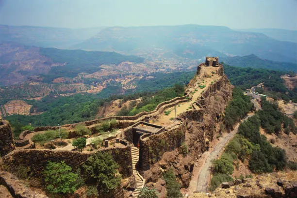

Places to visit
Maharastra has various visitor attractions including within the city.
Maharastra

Mumbai
MumbaiMayanagri, the city of dreams, the one that never sleeps, India’s financial centre, Bollywood—Mumbai has many names and it lives up to each of them every day. Mumbai is among the most populated Maharashtra tourist places. Dotted with well-maintained architectural wonders from India’s colonial past, Mumbai offers a visual treat to Gothic architecture lovers. Meanwhile, for those who wish to experience the charm of a fast-moving city, a quick hop on the Mumbai local during the peak hours will be a story to tell. Or just embark on a 15-minute ferry ride from Gateway of India jetty to revisit a lost world at Elephanta Island.

Pune
PuneCultural capital of Maharashtra, Pune holds a place of pride in every Marathi’s heart. Once a political centre of the Indian sub-continent, Pune was the seat of Peshwas of the Maratha Empire. The district alone boasts 17 forts of which the most famous are Shaniwar Wada, Singhagad Fort, and Purandar Fort, closely followed by a remarkably different- looking Aga Khan Palace that served as a prison for Mahatma Gandhi and Kasturba Gandhi soon after he launched the Quit India movement. Pune is a heaven for an art, culture, and adventure .
Mahabaleshwar
MahabaleshwarNestled amid the scenic Western Ghats, this popular hill station is known for its breathtaking landscapes, evergreen timberlands, waterfalls, and ancient temples. A trip to Mahabaleshwar means boating in Venna Lake, undertaking a sunset trek to the Pratapgarh Fort, visiting Rajpuri Caves, tantalising your taste buds with freshly-plucked berries, and clicking picture-perfect photos with astounding views of the hills and valleys in the background.
Lonavala
LonavalaLocated between Mumbai and Pune, this beautiful hill station offers a quick getaway from the rushed city life. Famous for mouth-watering chikki (Indian candy made of nuts set in jaggery or sugar syrup), Lonavala offers a scenic drive from both cities. The beautiful winding roads and long tunnels on the Pune-Mumbai Expressway is a reason enough to keep going back to Lonavala. While Lonavala itself is a very small hill station, it is surrounded by some of the best tourist places in Maharashtra such as Pawna Lake, Lohagarh Fort, Visapur Fort, Tiger’s Point, Bhaja Caves, Kune Falls and Shree Narayani Dham Temple. You can also enjoy camping and trekking in Lonavala.
Khandala
KhandalaLocated quite close to Lonavala, Khandala is one of the famous places in Maharashtra, thanks to a popular Bollywood song. The hill station enjoys pleasant weather throughout the year and turns lush green during the monsoons. In addition to the pristine lakes and beautiful waterfalls, the quaint little hill station offers views of picturesque peaks and stunning valleys. Some popular attractions in Khandala include Karla and Bhanja Caves, Della Adventure Park, Sunil’s Celebrity Wax Museum and Aadishakti Mata Temple.
Matheran
MatheranIf you prefer a non-touristy hill station away from the hustle and bustle of weekend travellers, then Matheran is the right choice. What makes Matheran an extraordinary experience is the absence of cars and buses on the road. Yes, you read it right. Cars are not allowed in Matheran, leaving the pathways free for leisurely walks. The town offers many trekking trails to various viewpoints from where you can enjoy alluring views of the sunrise, sunset and mountains. The peaceful and picturesque Charlotte Lake is an ideal spot for picnics and camping.

Nagpur
NagpurOften known as the winter capital of Maharashtra, Nagpur has gained popularity with its tasty orange harvest. It also wins the hearts of the tourists with temples, green gardens, and stunning lakes. Moreover, you will also find the Deekshabhumi here, which is the largest hollow Buddhist stupa.

Nashik
NashikNashik is one of the most important holy places to visit in Maharashtra. As per Hindu mythology, Lord Rama stayed in Nashik during his 14 years of exile. For Rama devotees, a visit to Nashik is incomplete without visiting the famous Kalaram Temple where a black statue of Lord Rama is worshipped. The sanctum sanctorum of the temple also houses black statues of the god Lakshmana and the goddess Sita. Nashik is one of the four main sites for Kumbh Mela. Held once every 12 years, the event attracts millions of devotees from across the globe.
Panchgani
PanchganiEnclosed by five hills, this popular hill station is known for its beautiful waterfalls, lush green forests and juicy strawberries. If you love nature vacations, then Panchgani would be a perfect pick. When you visit Panchgani do not forget to include Kaas Plateau – a UNESCO World Heritage site – in your itinerary. Known as Maharashtra’s Valley of Flowers, Kaas plateau and surrounding grasslands look stunning in the months of August and September when it turns into a sea of blooming flowers. While in Panchgani, you must also visit Mapro Garden for delicious fruit-based treats.
Alibaug
AlibaugPopular as ‘Mini-Goa’, this small coastal town in the Konkan region of Maharashtra is a must-visit. Apart from spending time on the clean and serene beaches of Alibaug, you can visit many temples and forts here. Alibaug Beach, the most-visited beach in the town, offers stunning views of the sunrise, sunset and Kolaba Fort. Kihim Beach and Nagaon Beach are perfect places for water sports and landscape photography lovers. Do not forget to include Brahma Kund, Khanderi Fort and Vikram Vinayak Temple in your Alibaug itinerary.